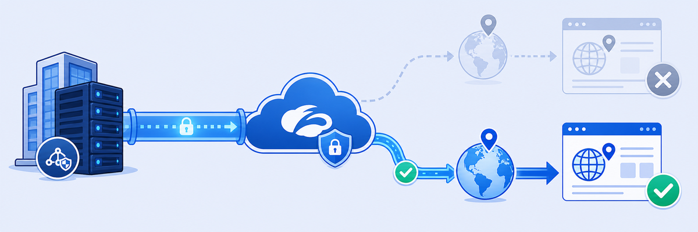

Lab 12: Traffic Forwarding through SIPA
Scenario: Safemarch Corporation hosts critical cloud applications that require strict Source IP whitelisting for access. Zscaler Internet Access (ZIA) uses dynamic egress IP addresses, which can cause problems when reaching these applications. To meet these requirements, a Zscaler administrator must configure the Source IP Anchoring (SIPA) feature to ensure consistent, whitelisted source IPs for accessing public applications while using ZPA's secure connectivity.
Objectives: By the end of this lab, you will:
- Configure a Source IP Anchoring application segment to give public applications consistent egress IPs.
- Define and apply ZPA and ZIA forwarding rules that enable SIPA for traffic management.
- Validate the configuration by testing traffic routing through the SIPA-enabled application.

With SIPA, ZIA still inspects the traffic, but instead of leaving the internet from a shared Zscaler IP, it hands the session to ZPA, which sends it out through your App Connector and therefore your public IP.
- A SaaS partner only accepts logins from IPs on its allow-list. Why is "just allow-list Zscaler's egress IPs" a poor answer, and how does SIPA solve it?
- You create two client forwarding rules for the same segment: SIPA Bypass (Client Connector → Bypass ZPA) and SIPA Forward (ZIA Service Edge → Forward to ZPA). Why both, and what would go wrong without the bypass?
- In Task 12.3 you swap
ip.zscaler.comforping.euin the segment, and the new site's traffic is anchored without touching any ZIA rule. What does that tell you about where the "which apps get SIPA" decision lives?
In this task, you will configure the SIPA feature in ZPA so public applications get a fixed, whitelisted egress IP.
1 Check the current egress IPs
- Find your native public IP (without ZCC):
- Open Zscaler Client Connector (ZCC) on the Corp Client PC and disable ZIA and ZPA.
- Open a browser and go to:
ip.zscaler.com

Note: The IP address displayed is your device's native public IP without Zscaler services active.
- Find your public IP after enabling Zscaler services:
- Re-enable ZIA and ZPA in ZCC.
- Open a browser and go to:
ip.zscaler.com
Note: The IP address shown is the ZIA egress IP, which changes dynamically, as is typical of Zscaler's proxy-based architecture. Public applications, however, often need a consistent, predictable IP for security reasons. Enabling SIPA solves this, as you'll configure in the next steps.
2 Configure SIPA in ZPA
- Go to the ZPA Admin Portal through the Experience Center:
- Go to Infrastructure > Private Access > App Connectors.
- Verify that an App Connector is deployed and connected.
- Add a new Application Segment:
- Go to Policies > Private Applications > Defined Application Segments.
- Click Add Application Segment and configure it as follows:
Name:
SIPA Application; Source IP Anchor: Enabled; Application:ip.zscaler.com; TCP Port Ranges: 80 (HTTP) and 443 (HTTPS). Click Next.
- Configure the Segment Group: Name
SIPA Segment, Description optional, Status Enabled. Click Next. - Configure the Server Group: Name
SIPA Server, App Connector Group OnPrem. Click Next. - Click Save to complete the configuration.
3 Configure and save the access policy
- After you save the SIPA Application Segment, you are redirected to the Access Policy page. Alternatively, go to Policies > Private Applications > Access Policy.
- Add a new policy rule:
- Name:
SIPA Policy - Action: Allow Access
- Criteria: select the applications mapped to the SIPA application segment and segment groups.
- Name:
- Click Save.
4 Configure the Client Forwarding Policies
- Rule 1, bypass ZPA for specific segment groups. Go to Infrastructure > Private Access > Client Connector Policies > Client Forwarding Policies and add a client forwarding policy:
- Name:
SIPA Bypass - Rule Action: Bypass ZPA
- Criteria: Applications = map the application segments and segment groups. Client Types = Client Connector.
- Click Add Rule.
- Name:
- Rule 2, forward traffic to ZPA. Configure
SIPA Forward:- Rule Action: Forward to ZPA
- Criteria: Applications = map the application segments and segment groups. Client Types = ZIA Service Edge.
- Click Add Rule.
In this task, you will configure forwarding behavior in Zscaler Internet Access (ZIA) so that SIPA-enabled applications are routed through ZPA with consistent source IPs.
1 Define the ZPA Gateway
- In the Experience Center, go to Infrastructure > Internet and SaaS > Network Policies > Zscaler Private Access.
- Click Add Gateway for ZPA and give it a name (e.g.,
SIPA Gateway). - Select the server group and application segment. These should be fetched automatically from the ZPA configuration in Task 12.1.
2 Configure the Forwarding Control Policy
- On the same page, move to the Forwarding Control Policy tab.
- Define the following:
- Rule order: 1
- Rule name:
SIPA Forward - Make sure the rule status is enabled.
- Under Forwarding Method, select ZPA.
3 Set the forwarding criteria
- Go to the Criteria tab.
- Click Destination and define the ZPA application segment (e.g., SIPA Application).
- Set the Forward to ZPA Gateway action to the SIPA Gateway you defined earlier.
- Click Save, then Activate the changes.
In this task, you will verify that the SIPA configuration works correctly by confirming that traffic is routed through ZPA, and see what happens when you change the application segment.
1 Do an initial check
- Open a browser on the Corp Client PC and go to:
ip.zscaler.com - Look at the public IP address shown. This IP confirms that traffic is routed from ZIA to ZPA to the App Connector, as defined in the SIPA rule.
Note: The SIPA IP shown is different from the default ZIA egress IP (Step 1 of Task 12.1). This shows that ZPA can give a fixed source IP to selected applications, which is essential for whitelisting security.
2 Dynamic testing (modify the application segment)
- Go to the ZPA Admin Portal through the Experience Center: Policies > Private Application > Defined Application Segments.
- Edit the SIPA Application segment as follows:
- Remove
ip.zscaler.comfrom the Application tab. - Add a new domain (e.g.,
ping.eu) instead.
- Remove
3 Test the dynamic configuration
- Open a browser and go to:
ping.eu - Look at the new IP address shown by ping.eu.
Note: Traffic for the newly defined application is routed through ZPA-SIPA and shows the updated ZPA egress IP.
SIPA Application (Source IP Anchor on, 80/443) + SIPA Segment/Server + SIPA Policy. Client forwarding: SIPA Bypass (Client Connector) + SIPA Forward (ZIA Service Edge). ZIA: SIPA Gateway + forwarding rule (method ZPA) + Activate. To change which apps are anchored, edit the segment.